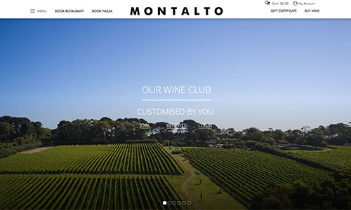
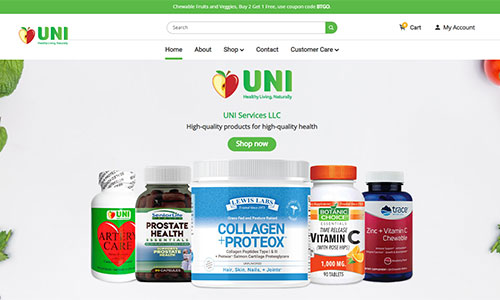

Patz Deoduco.
I'm a Web developer. Freelancer. Gamer.
Cagayan de Oro City
Hire me so I can buy PS5! xD
About Me!
I have 8+ years experience on Wordpress with the following page builders like: Divi, WPBakery, Beaver and Elementor. I can build a website from scratch like PSD/XD to html conversion. I've handled projects like Woocommerce, real estate, personal blogs and commercial business sites.
I'm proficient in using Adobe Photoshop/XD and Figma. I also know how to do website maintenance like upgrading, migration, optimizing, Go-live(domain + DNS setup), and backups.
I have basic knowledge about Google Teachnologies such as Recaptcha, Search Console and Google Analytics.

Slayed Works.

Woocommerce + WPBakery

Woocommerce + Beaver
Custom Post Type + Shortcode + Divi
Custom Post Type + Shortcode + Elementor